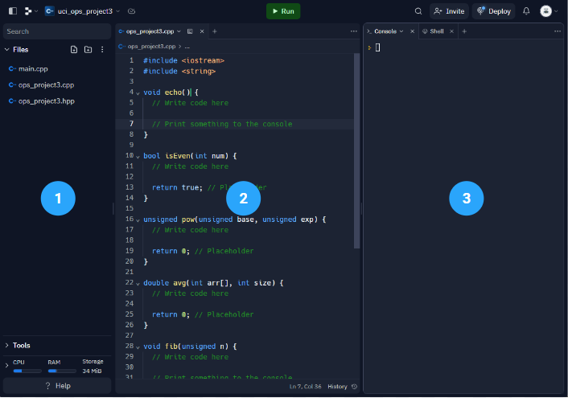
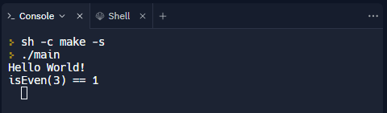
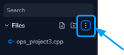

Project 3
C++ Programming
By Gavin Nguyen
Overview
Before diving into microcontrollers, you will explore basic computer programming topics. This will provide the necessary context for writing Arduino code. You will create several C++ programs in an online environment. To verify the code, you will write your own tests and then submit the code files to an autograder.
Concepts
C++ Programming Language
 Nearly four decades old, C++ is one of the most widely used general-purpose programming languages. It is highly versatile, utilized in operating systems, video games, internet browsers, embedded software, and more!
Nearly four decades old, C++ is one of the most widely used general-purpose programming languages. It is highly versatile, utilized in operating systems, video games, internet browsers, embedded software, and more!
C++ was designed to extend the C programming language. For the most part, anything you write in C can also run in a C++ program.
C and C++ are frequently used in embedded systems programming, partly due to the ease at which the languages directly interface with hardware. You can create and delete data in memory. You also have great awareness and control over where and how the data is stored. This is particularly useful when memory, storage, and processing power are limited. C/C++ programs can be lightweight and incredibly efficient.
In Lecture III, we discuss the basics of writing a C++ program. There you will learn about the syntax and semantics of the language.
Integrated Development Environment (IDE)
An integrated development environment (IDE) is a suite of applications used for programming. It includes a source-code editor, compiler, debugger, and build automation tools.
When you create a program, you will write and edit it in the source-code editor. Then, you will employ the help of the compiler to convert the source code (C++ for example) to machine code, which is readable by the computer. You may also run a debugger to troubleshoot errors while the program is running. Again, all of these applications are part of the IDE.
Popular IDEs include Microsoft Visual Studio, Eclipse, and IntelliJ IDEA. There are plenty more to choose from, some of which are customized to specific programming languages.
Compilers, Assemblers, and Linkers. Oh My!
You write code in a programming language like C++, but that is not what the computer executes as instructions. The computer sees only 1s and 0s, or binary machine code. So how do we bridge the communication gap between you and the computer? We use a program called a compiler to translate your C++ code into machine language.
We tend to use “compiler” as an umbrella term to describe what is actually several programs working together to create machine code. In reality, the compiler turns a high-level language like C++ into assembly code.
Assembly language is a low-level programming language based on a computer’s processor. Each assembly statement corresponds directly with a machine instruction or set of instructions. There was a time when most programmers wrote in assembly language; this is no longer commonplace.
The assembler converts the assembly language into machine code. We’re not done, though! One last program called a linker takes the machine code files and “links” them together into an executable file. You might recognize executables as files with the “.exe” extension on Windows. The executable is ultimately what the computer uses to execute your program.

IDE Setup
Before we get started, you will need to choose an IDE. It is recommended that you use Replit, a free online IDE, for this project.
Replit
Visit this link and create an account with Replit. You will notice that there are paid pricing options. However, they are not required to complete the project.
Requirements
You will write five functions into one .cpp file. The requirements for each function are listed below. They must pass the autograder when submitted.
Echo
- Function Header:
void echo() - Parameters: None
- Return: None
- Description:
echo()uses the standard input/output stream. When the function is called, the user types in one text string to the console. The function then prints that identical string back to the console.
Even or Odd?
- Function Header:
bool isEven(int num) - Parameters: num (int)
- Return: bool
- Description: Description:
isEven()returns true if the parameternumis an even number and false if otherwise.numcan be any integer value, negative or positive. - Examples:
isEven(62) : trueisEven(3) : falseisEven(-2) : trueisEven(0) : true
Number Power
- Function Header:
unsigned pow2(unsigned base, unsigned exp) - Parameters: base (unsigned int), exp (unsigned int)
- Return: unsigned int
- Description:
pow2(2)returns the calculated value ofbaseraised to the power ofexp(i.e. base exp). The parameters can only be positive integers. - Examples:
pow2(6, 2) : 36pow2(1, 8) : 1pow2(9, 3) : 729
Take the Average
- Function Header:
double avg(int arr[], int size) - Parameters: arr (int array), size (int)
- Return: double
- Description:
avg()returns the mean of the elements in the arrayarr. The array must not be mutated by the function. Its elements may be positive or negative.
Fibonacci Sequence
- Function Header:
void fib(unsigned n) - Parameters: n (unsigned int)
- Return: None
- Description:
fib()prints the first n elements of the Fibonacci sequence to the console. Each element should be separated by a comma and one space. The last element terminates the line without a space or comma.n > 0 - Examples:
fib(1) : 1fib(4) : 1, 1, 2, 3
Instructions
Checkpoint 1: Hello World
-
Access the project template code through this link. Fork the project to create your own copy in Replit.

-
After you fork the project, the IDE will automatically launch. Click on the file “ops_project3.cpp” in the file explorer (1). The file's contents will be displayed in the editor (2). This is where you will implement each of the required functions. When you execute the code, its output will appear in the console (3).

-
Now, click on the file “main.cpp” in the file explorer. There, you will see the
main()function. The provided template code will print “Hello World” to the console. -
Click the “Run” button at the top of the viewport. The .cpp file will compile and then execute. You should see the following output to the console:

“Hello World” is printed onto the console (along with one test for Checkpoint 3). - Replit comes equipped with AI assistive features, which we will not use for this project. In the IDE, expand the "Tools" dropdown in the left pane, and select "User settings." Then, a settings menu should appear. Inside the menu, turn OFF the "AI code completion" toggle.
Checkpoint 2: Echo
-
Implement the
echo()function as described by the project requirements. -
Verify your code by writing tests in
main().
Checkpoint 3: Even or Odd?
-
Implement the
isEven()function as described by the project requirements. Verify your code by writing tests inmain(). -
Verify your code by writing tests in
main().
Checkpoint 4: Number Power
-
Implement the
pow2()function as described by the project requirements. -
Verify your code by writing tests in
main().
Checkpoint 5: Take the Average
-
Implement the
avg()function as described by the project requirements. -
Verify your code by writing tests in
main().
Checkpoint 6: Fibonacci Sequence
-
Implement the
fib()function as described by the project requirements. -
Verify your code by writing tests in
main().
Deliverables (Enrolled Students Only)
Students enrolled in the course must submit the following deliverables to the corresponding Canvas course assignment:
-
Download your work from Replit by navigating to the file explorer and selecting the “Actions” button. Click “Download as zip”.

Ensure the following files are in the zip:- “ops_project3.cpp”
- “ops_project3.hpp”
Rename the file to “ops_project3.zip” Then, submit the zip file to the Project 3 Gradescope assignment.